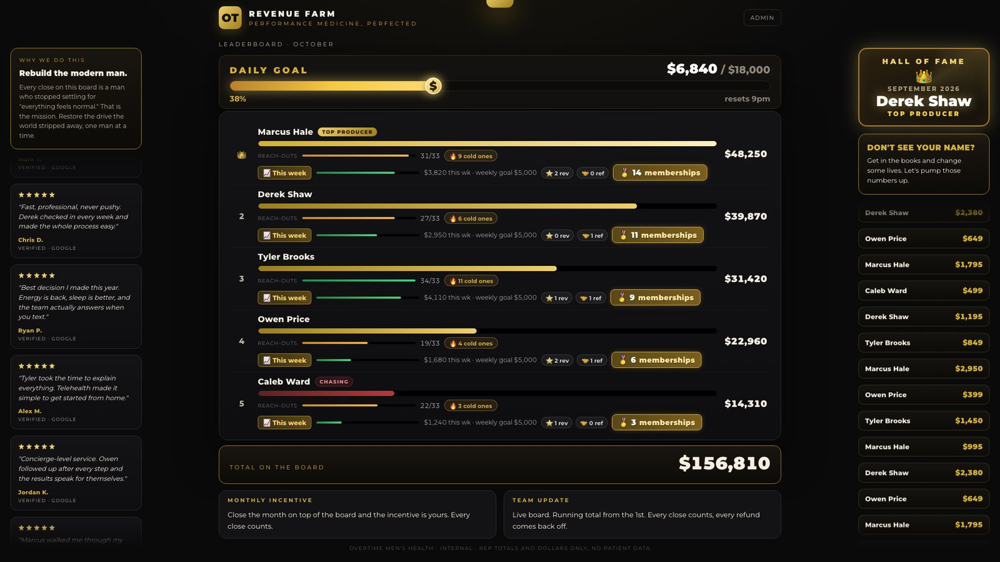
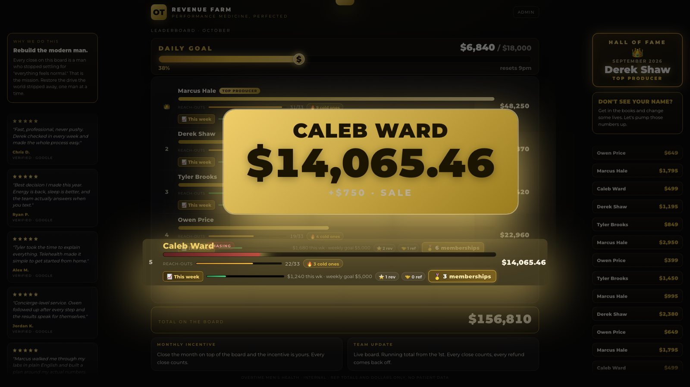

01Sales and revenue
Revenue Farm: live sales leaderboard
Live
A big-screen leaderboard on the sales-floor TV. It builds itself from the reps' own sales posts in the team chat, so nobody types anything twice.
Explore the build
Problem
- Sales were posted as free-text messages in a group chat, and totals were tallied by hand.
- No live view of who was winning the month, so there was no competitive energy.
What it does
- A parsing engine reads every post, pulls out product and amount, credits the poster, and updates the board within minutes.
- Animated sale celebrations with custom sounds, a rank change takeover, and milestone events.
- Separate counters for memberships, reviews and referrals, plus a rotating Hall of Fame of past monthly winners.
- The board rolls over on the 1st of each month by itself and archives the closed month.
Hard parts solved
- Messy human input: two deals in one message, totals restated in follow-ups, product names with numbers in them (a product like "BPC-157" is not $157), and even amounts written in Japanese numerals.
- Dedup against the CRM so a sale is never counted twice.
- A browser audio limit that went silent after about 6 sales, fixed with a single shared audio context.
Privacy design
- The board shows rep, product and dollar amount only. Patient names never leave the parser.
- A file allowlist on hosting means only the public data file is ever served, so internal logs stay private.

Stack: Python parsing engine on a schedule, static HTML/JS board on Vercel, Web Audio, serverless API routes, Vercel Blob.